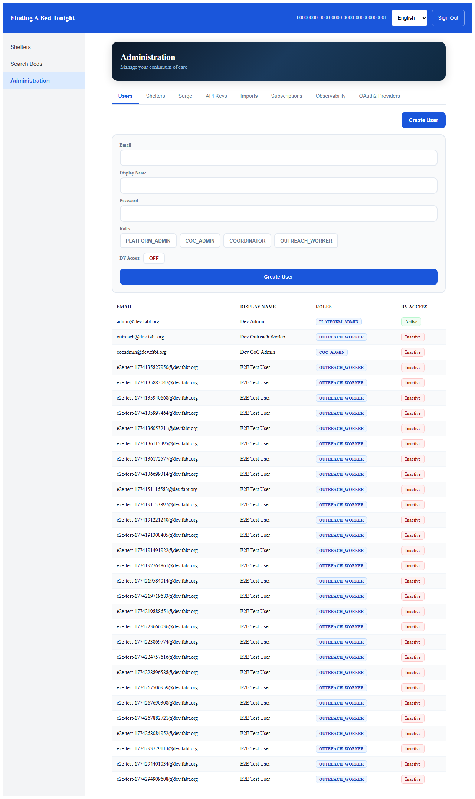
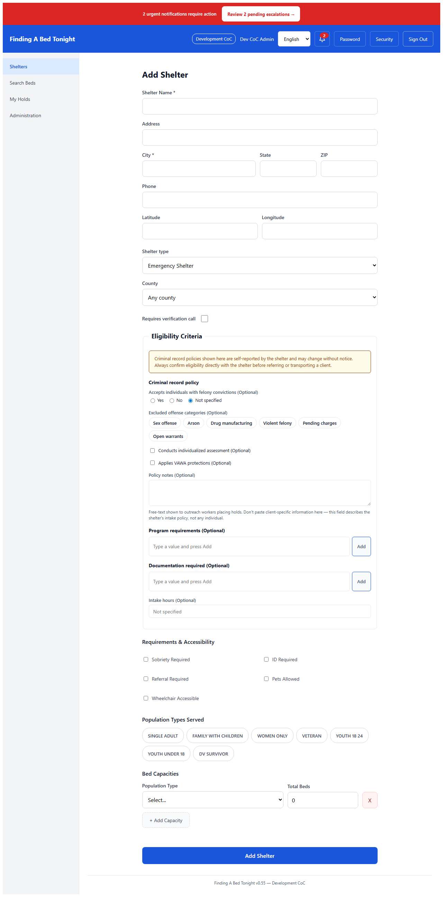
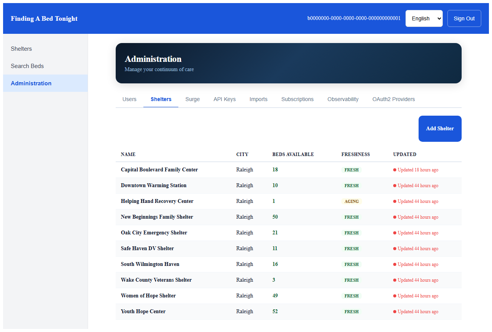
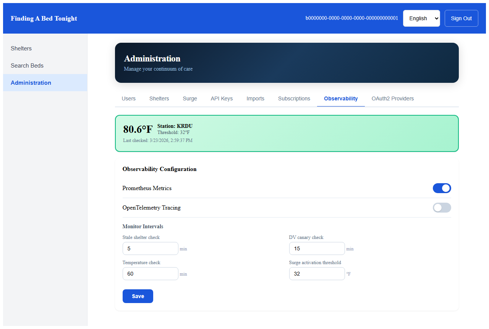

Authentication
1
Login
All Roles
Tenant-scoped login with email/password and OAuth2 SSO. Enter a tenant slug to see "Sign in with Google/Microsoft/Keycloak" buttons (loaded dynamically per tenant). Closed registration: admin must pre-provision user accounts.

Outreach Worker: Bed Search & Reservations
2
Bed Search
Outreach Worker
Outreach workers search for available beds by population type. Results are ranked by availability, barriers, and data freshness. DV shelters are filtered by Row Level Security.

3
Search Results
Outreach Worker
Bed search results show shelter name, availability by population type, data freshness indicators (green/yellow/red), and constraint filters (pets, wheelchair, sobriety).

4
Shelter Detail
Outreach Worker
Shelter detail viewed from bed search results. Shows availability by population type, constraints, data freshness, and action buttons for holding a bed.

5
Reservation Hold
Outreach Worker
Outreach workers can soft-hold a bed for up to 45 minutes (configurable per tenant). The hold prevents double-booking while the worker transports the client to the shelter. Concurrent hold safety via PostgreSQL advisory locks.

Coordinator: Bed Management
6
Coordinator Dashboard
CoC Admin
Shelter coordinators update bed availability with a 3-tap flow. The dashboard shows all shelters with current occupancy, hold counts, and data age indicators.

7
Bed Count Update
Coordinator
Expanded shelter card showing the unified bed editing form. Coordinators adjust Total Beds, Occupied, and On Hold counts with +/- steppers per population type. On Hold is read-only (managed by the reservation system). Available is computed: total - occupied - onHold. Single save writes an availability snapshot.

Internationalization
8
Spanish Language
All Roles
Full Spanish localization (react-intl). All UI labels, error messages, and navigation switch instantly via the language selector. Supports EN and ES out of the box.

Administration
9
User Management
Platform Admin
Admins manage users with role-based access: Platform Admin, CoC Admin, Coordinator, Outreach Worker. DV access is a separate toggle for domestic violence shelter visibility.

10
Create User Form
Platform Admin
New user creation with email, display name, password, role selection (multi-select), and DV access toggle. Users are scoped to their tenant.

11
Shelter Management
Platform Admin
Shelter profiles with address, constraints, capacity by population type. Supports HSDS 3.0 import and 211 CSV import for bulk onboarding.

12
Add Shelter Form
Platform Admin
New shelter creation with name, address, phone, coordinates, constraints (pets, wheelchair, sobriety, ID, referral), and initial bed capacity by population type.

13
Shelter Detail
Platform Admin
Detailed shelter view from the admin panel showing profile, constraints, and current availability status by population type.

14
Surge Mode
Platform Admin
White Flag emergency surge activation during extreme weather. Enables overflow beds, broadcasts to all shelters, and flags search results with surge status.

15
Observability Settings
Platform Admin
Runtime configuration for metrics, tracing, and monitors. Live temperature display from NOAA with configurable surge activation threshold. Toggle Prometheus and OpenTelemetry tracing without restart.

16
OAuth2 Providers
Platform Admin
Admin OAuth2 provider management. Configure Google, Microsoft, or Keycloak SSO per tenant. Write-once client secret, OIDC test connection, delete confirmation. Closed registration: only pre-provisioned users can log in.

Observability Stack (Optional)
17
Grafana Dashboard
Operations
FABT Operations dashboard with 10 panels: bed search rate, latency, availability updates, reservation lifecycle, stale shelter count, DV canary status, surge active, temperature gap, webhook delivery, circuit breaker state.

18
Distributed Tracing
Operations
Jaeger trace visualization showing OpenTelemetry spans for API requests. Traces include service name, operation, duration, and status. Enabled at runtime via the Observability tab.